Comércio exterior
Duna Comex
Um checklist transforma o modelo de importação em tarefas e impede o avanço enquanto há pendências obrigatórias.
Next.js · Fastify · PostgreSQL
Desenvolvedor full stack
Desenvolvo aplicações web para quem precisa acompanhar uma operação, decidir o próximo passo e saber o que já foi feito. Nos quatro projetos abaixo, fui o único desenvolvedor.
Ver projetos
Comércio exterior
Um checklist transforma o modelo de importação em tarefas e impede o avanço enquanto há pendências obrigatórias.
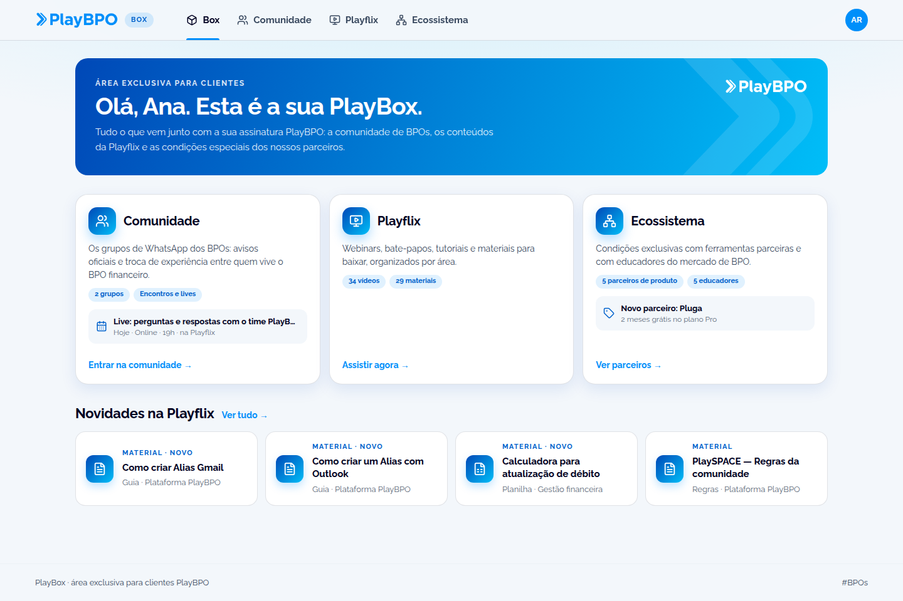
Conteúdo e benefícios
Um portal reúne comunidade, parceiros e aprendizado. O painel mostra como gestores e operadores usam o conteúdo.

Customer Success
Da saúde de uma conta à próxima ação da equipe, com distribuição de carteiras, cadências e um editor visual de automações.

Assistente integrado
Um chat dentro do SGI usa o contexto do cliente para organizar consultas de suporte, tarefas e saúde da conta.
Projeto em foco
Desenvolvimento individual · Bruno de Souza Tobias
Projeto anterior · descontinuado
Gestão de processos de importação, da abertura da operação à entrega da carga.
O Duna estruturava o acompanhamento da importação em fases, tarefas, prazos e documentos. A equipe podia consultar o andamento e o histórico no próprio processo.
Modelos reutilizáveis geram as etapas e tarefas de cada operação. Regras condicionais ajustam o checklist conforme as características do processo.
As tarefas têm vencimentos e responsáveis. A API avalia pendências que bloqueiam o avanço do processo.
A API registra eventos de auditoria e oferece rotas de anexos. A interface exporta checklists e follow-ups em PDF.
A interface usa Recharts para apresentar relatórios. A API aplica autenticação e permissões por cargo e contexto.
O painel reúne processos e tarefas próximas do vencimento, com controle de escopo para acompanhar a própria fila.
A busca integrada permite localizar clientes, fornecedores e processos. A administração de usuários e cargos controla o acesso às áreas operacionais.
A landing estática, em HTML, CSS e JavaScript, tinha hospedagem separada e um fluxo de contato via webhook. A aplicação operacional consumia a API Fastify, que acessava o PostgreSQL pelo Prisma.
TypeScript · Tailwind CSS · React PDF · Recharts · Node.js
Estas telas acompanham uma importação fictícia na interface original de uma versão histórica do Duna. O frontend rodou localmente, com a sessão de demonstração e respostas simuladas da API.

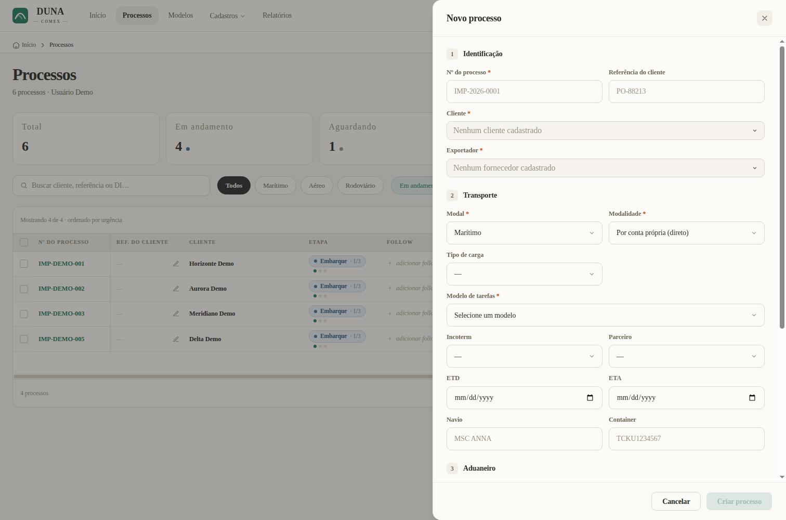
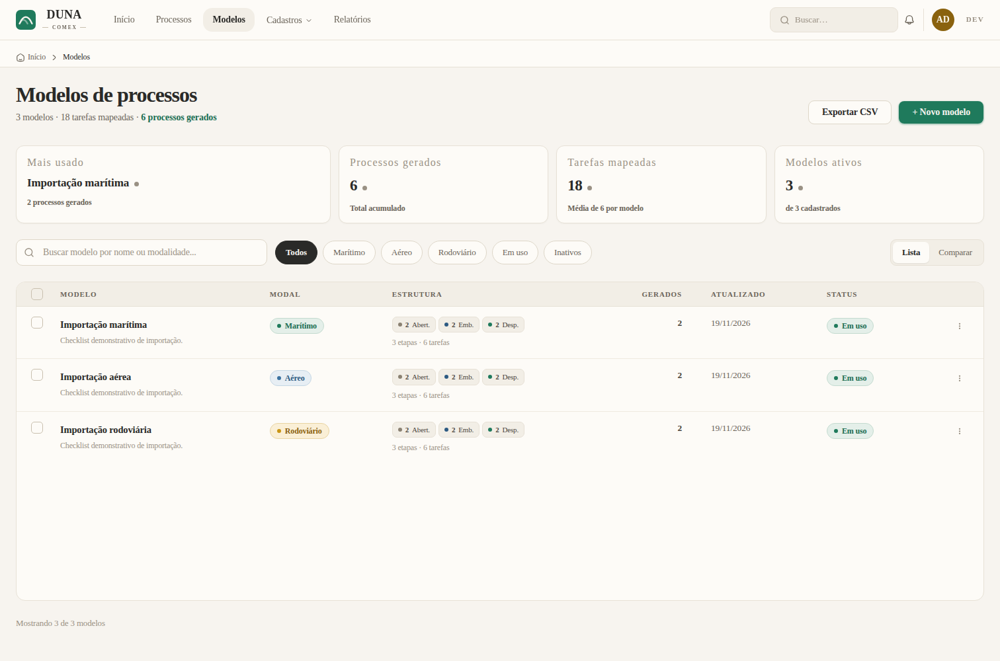
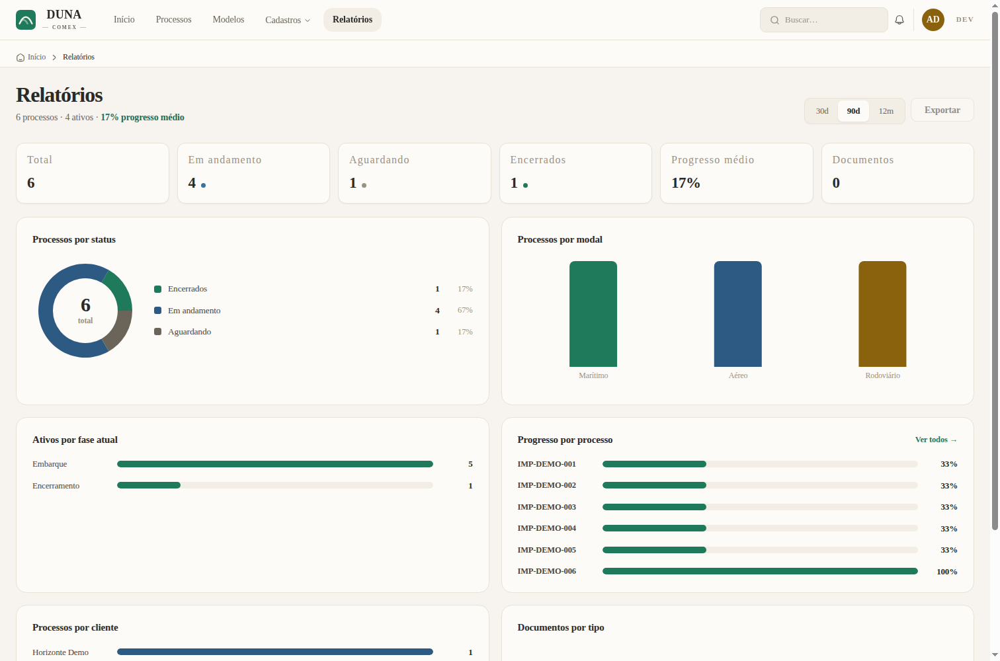
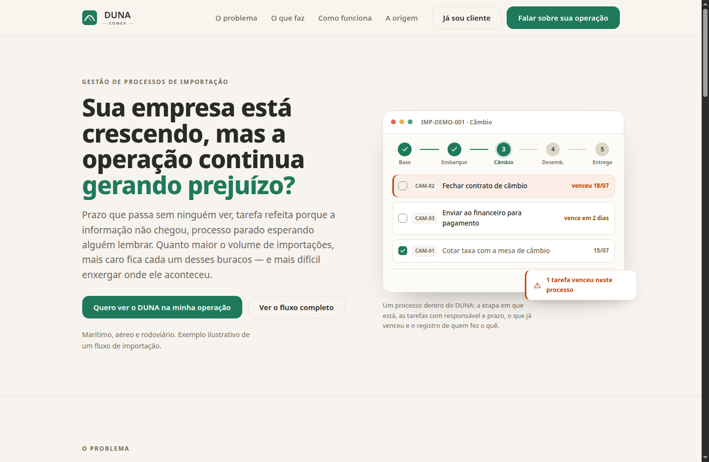

A API Fastify e o PostgreSQL foram analisados no código. A demonstração visual cobre o frontend.
Portal de benefícios para BPOs
Desenvolvimento individual · Bruno de Souza Tobias
Uma porta de entrada para aprender, trocar experiências e acessar benefícios.
Modernizei o portal da Play Benefícios em Vue e reuni três áreas na página inicial do Box. No Playflix, a equipe aprende e retoma conteúdos. Na Comunidade, encontra grupos e eventos. No Ecossistema, consulta condições oferecidas por parceiros. A central administrativa acompanha como gestores e operadores usam essas áreas de conteúdo.
O catálogo lista categorias ativas e conteúdos publicados. Uma rota de busca consulta o índice textual no D1.
O leitor transforma Markdown em HTML e extrai os títulos para montar o sumário.
Rotas registram e consultam o progresso por conteúdo. Materiais têm uma rota dedicada de download.
A área administrativa reúne edição de conteúdos, categorias e organização de parceiros.
A página inicial reúne Comunidade, Playflix e Ecossistema. Destaca o próximo encontro, parceiros recém-adicionados e as últimas publicações. Cada operador mantém seu próprio progresso de leitura e vídeo.
Os membros consultam a agenda de encontros e lives, escolhem um grupo de WhatsApp e confirmam os combinados antes de abrir o convite. A administração edita grupos, regras e encontros.
Ferramentas e educadores têm vitrines filtráveis por categoria. Cada oferta tem um link próprio e pode incluir benefício, cupom copiável e instruções de resgate.
Na central administrativa, o filtro Operadores exibe o uso da equipe em 7, 30 ou 90 dias. O painel compara gestores e operadores por acessos a conteúdos, vídeos iniciados, conclusões, downloads, usuários e mensagens ao assistente Paulo.
O painel mostra visualizações por dia, os dez conteúdos mais acessados e buscas sem resultado. A equipe pode usar esses sinais para identificar lacunas, editar um material e controlar sua publicação.
A aplicação Vue é compilada pelo Vite. As rotas no Cloudflare Worker consultam o D1 para catálogo e progresso e usam o R2 para servir arquivos.
Interface do PlayBox executada localmente com a API simulada e dados de demonstração.

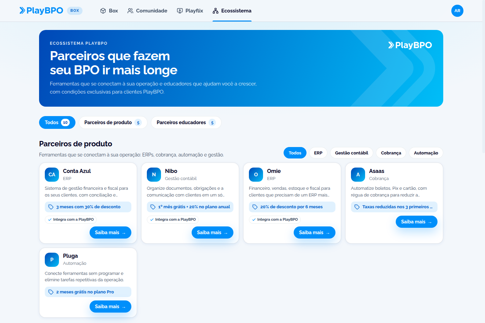
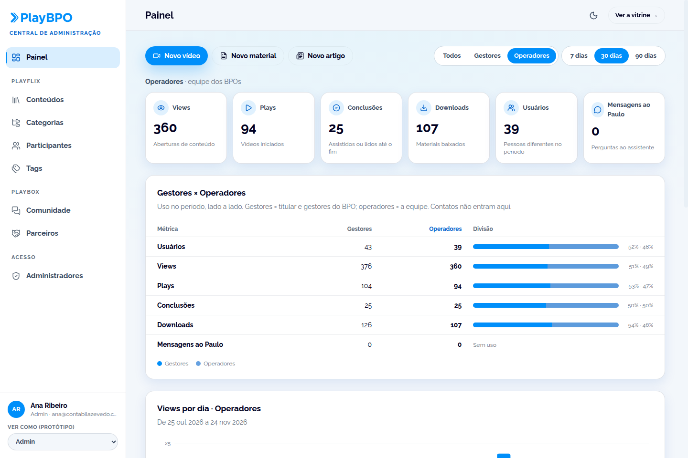
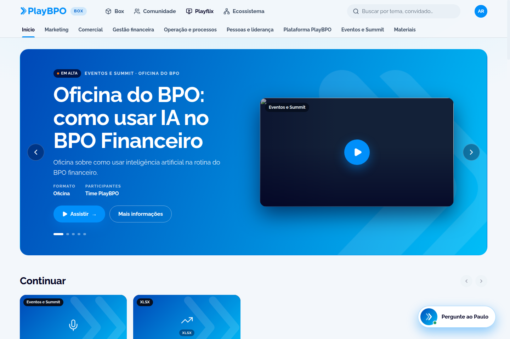

Catálogo, busca e progresso foram revisados no código. O projeto tem uma API simulada para desenvolvimento local.
Voltar aos projetosCustomer Success
Desenvolvimento individual · Bruno de Souza Tobias
Da carteira de clientes ao acompanhamento de cada conta.
Desenvolvi o Mini CX, chamado PlayCS no SGI, para o time de Customer Success da PlayBPO. O CSM começa pela carteira, identifica contas que precisam de atenção e abre a ficha para consultar saúde, histórico, suporte e atividades. O gestor acompanha a distribuição das contas e configura as rotinas do time.
A carteira tem filtros de clientes e permite alternar entre visões salvas.
O módulo de domínio expõe os fatores da nota, aplica pesos e faixas e disponibiliza histórico.
Quadros mostram o andamento de clientes nas etapas de uma cadência. Telas de campanhas e modelos ajudam a organizar ações de ativação.
O editor visual permite organizar blocos e ligações. A interface inclui uma lista de execuções.
A ficha reúne atividades, histórico e suporte. A agenda dá ao CSM outra entrada para o acompanhamento diário, além das visões de carteira e do quadro de cadências.
O gestor distribui carteiras e consulta indicadores de saúde, campanhas, cancelamentos e equipe. A auditoria permite filtrar registros por usuário, ação, cliente e status.
O gestor define quais CSMs recebem novas contas. Pode configurar rodízio, percentuais e regras por prioridade, respeitando a capacidade de cada responsável.
A gestão consulta visão geral, desempenho da equipe, saúde da carteira, cancelamentos e campanhas com filtros de período e CSM. Avisos sinalizam contas que pedem atenção.
O editor oferece gatilhos, condições, esperas e ações. O fluxo de cobrança com escalonamento mostra como o gestor encadeia esses blocos.
O SGI oferece acesso ao módulo com login único e verifica a permissão PlayCS. A aplicação Vue com Pinia é servida em /playcs/. A API Node.js com Hono concentra as ações do módulo e a persistência em MySQL.
Interface do módulo atual, executada localmente com a base fictícia de testes. As capturas acompanham o trabalho do CSM e as ferramentas de gestão.

O editor conecta gatilhos, condições, esperas e ações. A captura mostra o fluxo de cobrança com escalonamento.
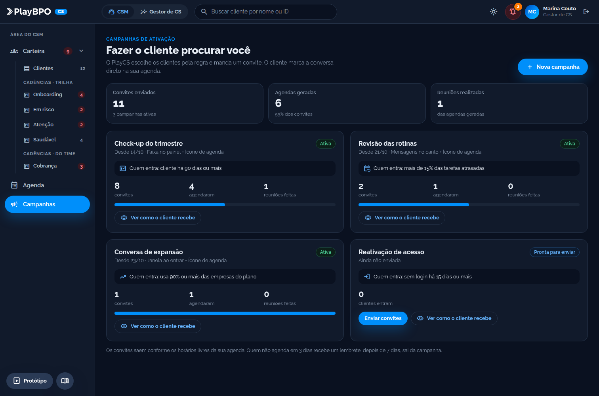
A equipe acompanha os convites enviados, os agendamentos e as reuniões realizadas por campanha.

Seleção de CSMs, capacidade e ordem das regras para atribuir clientes novos.
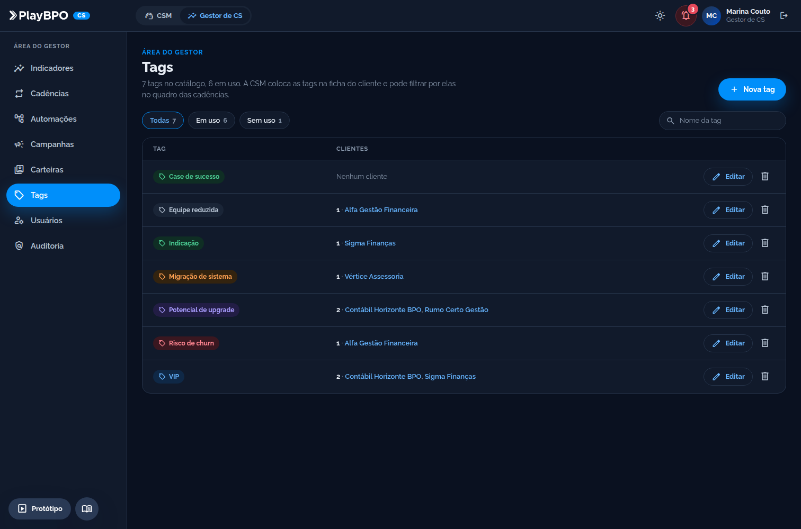
Catálogo de etiquetas e clientes associados a cada uma.

Lista de usuários, convites, perfis de acesso e situação da conta.
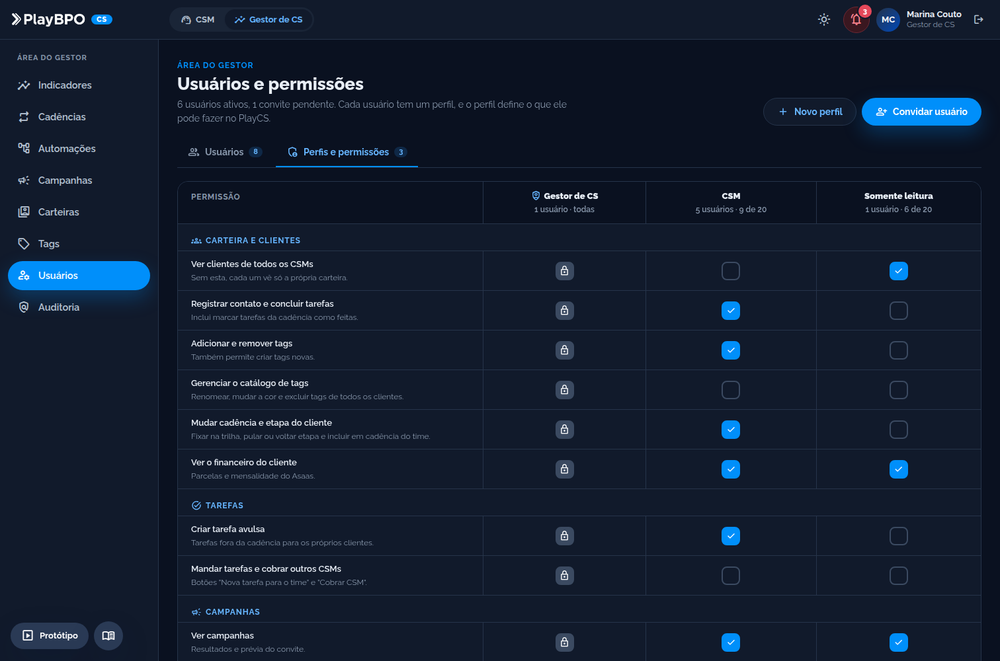
Matriz que mostra quais ações cada perfil pode executar.

Filtros por período, pessoa, ação e resultado. Os registros visíveis são fictícios.
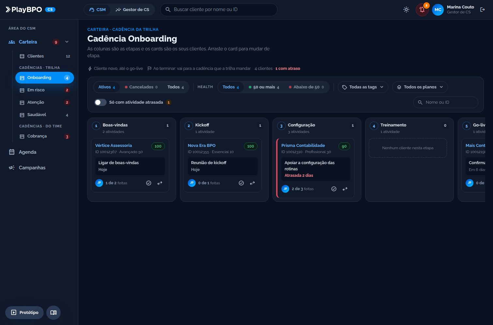
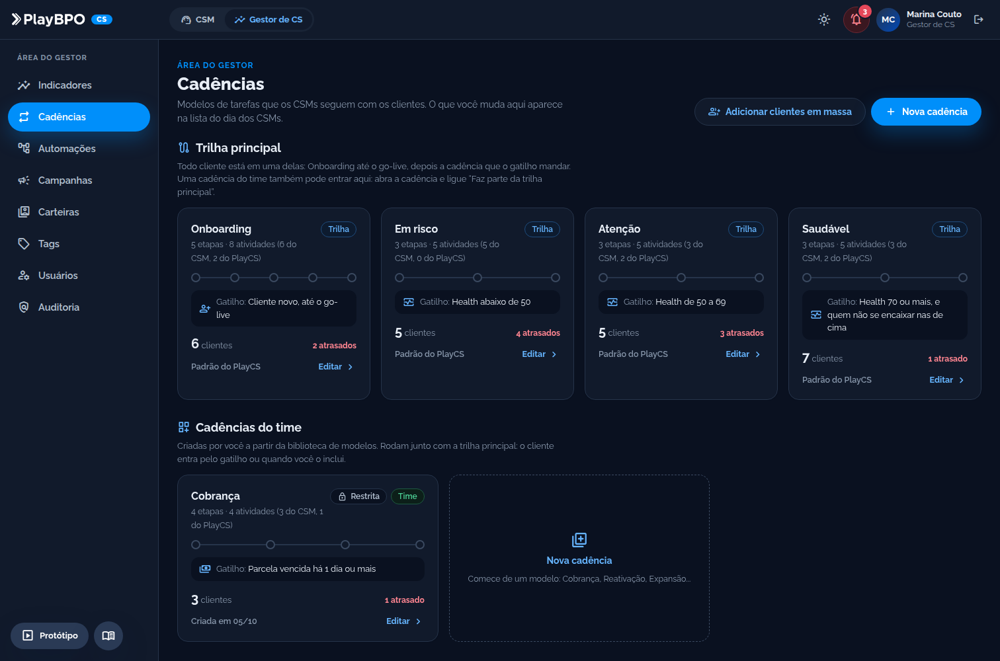


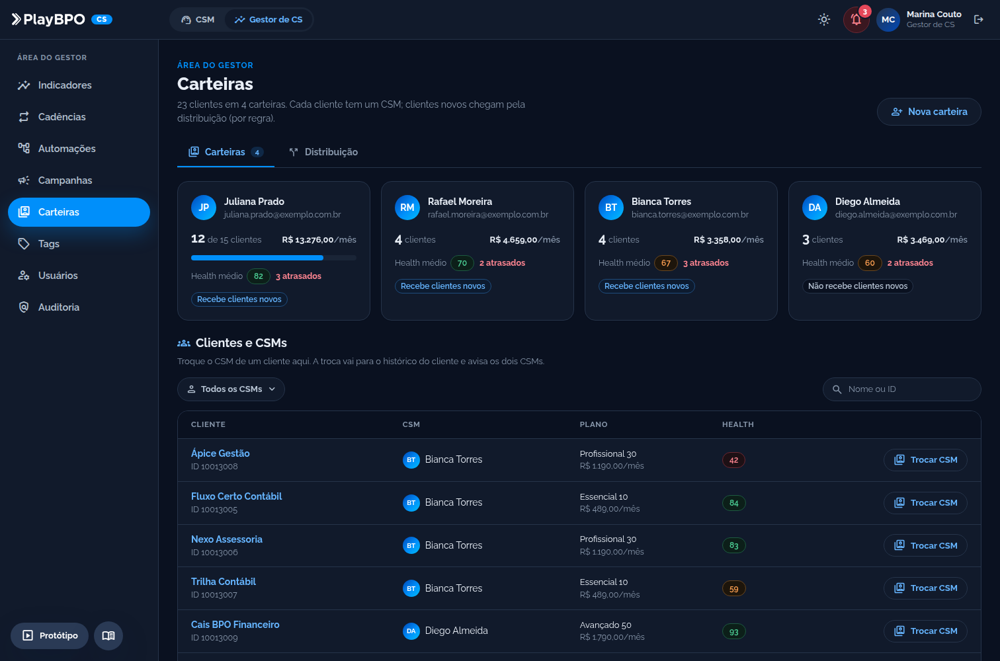
As 14 telas foram capturadas a partir do código do módulo PlayCS do SGI. A demonstração usou sessão e respostas locais simuladas. O login único, as integrações externas e a persistência foram revisados no código.
Voltar aos projetosAssistente integrado
Desenvolvimento individual · Bruno de Souza Tobias
Chat e resumos no contexto do sistema de gestão.
O assistente integra a interface do SGI ao n8n para apoiar consultas e resumos dentro do ambiente em que a equipe já trabalha.
O serviço recebe a conversa, o usuário e o cliente em foco. A identificação da sessão associa a solicitação à conversa.
O serviço oferece caminhos distintos para solicitar um resumo de ticket ou de health score.
O encaminhamento para o n8n passa por uma camada que interpreta o retorno e trata falhas da integração.
O serviço inclui uma operação para registrar feedback sobre a experiência com o assistente.
O chat aceita ID, razão social, CNPJ ou e-mail para localizar o cliente. A interface organiza respostas em cartões de resumo, tickets, parcelas, saúde e tarefas, com indicação da fonte.
No cartão de saúde, o SGI recebe o resumo e as altas e quedas com datas e valores. No feedback, a equipe pode indicar se a resposta ajudou e acrescentar um motivo ou sugestão.
Views do CodeIgniter apresentam o chat dentro do SGI. Um serviço PHP encaminha as solicitações ao fluxo externo do n8n e trata as respostas.
O chat original exibe uma consulta de exemplo e organiza a resposta em um cartão de tarefas. A resposta foi simulada localmente para demonstrar a interface.

A integração foi conferida no código do SGI. A execução do workflow externo e o conteúdo das respostas ainda precisam de validação.
Voltar aos projetos